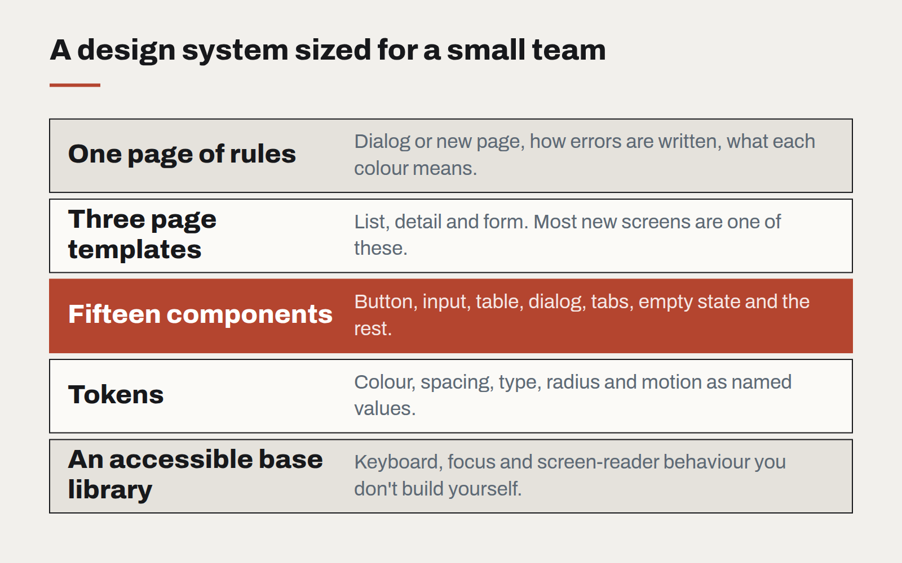

A design system for teams without a design team
Most organisations that need consistency cannot justify a dedicated design-system group. A small, opinionated kit — and the discipline to keep it small — gets them most of the way.

Design systems are usually described through the examples of large companies: dozens of components, documentation sites, a team of designers and engineers maintaining it all full-time. For a business with three developers and a part-time designer, that picture is discouraging, and the usual response is to have no system at all. Every screen is designed on its own, every developer picks their own spacing, and after two years the product looks like several products stitched together.
There is a version of a design system that fits small teams. It is smaller, more opinionated, and closer to the code. And it tends to deliver more value per hour than the large ones, because it is aimed squarely at the problems a small team actually has.
What goes in
- Tokens first. Colours, spacing, type sizes, radii and motion as named values in code. This alone removes most inconsistency, and takes days rather than months.
- Fifteen components, not a hundred. Button, input, select, checkbox, table, card, dialog, toast, tabs, navigation, page header, empty state, form layout, badge, and a loading state. That list covers the large majority of screens in most business software.
- Three page templates. A list, a detail view and a form. Most new screens are a variation on one of these.
- One page of rules. When to use a dialog versus a new page. How error messages are written. Which colour means what. Short enough that people actually read it.

What stays out
Everything else, until it is needed twice. The single most important habit is that a new component enters the system only when a second screen needs it. Before that, it is a one-off, built from existing parts where possible. This keeps the system small enough to maintain without anyone owning it full-time.
Build on something
Small teams should not build their base components from nothing. A well-maintained, accessible component library — styled with your tokens rather than its defaults — gives you keyboard support, focus management and screen-reader behaviour that would take months to get right alone. Your system becomes a thin, opinionated layer on top: your tokens, your fifteen components configured your way, and your rules.
Keep it alive
- One owner, part-time. Not a team, but one named person who reviews additions and says no often.
- A living reference page in the application itself, showing every component with real data. It doubles as a visual test.
- Automated checks for the rules that matter most: colour contrast, no raw colour values outside the token file, no spacing off the scale.
What it buys
The payoff is not visual polish for its own sake. It is speed and trust. New screens are assembled rather than designed from scratch. Developers stop debating margins. Accessibility improves everywhere at once when a base component is fixed. And the product starts to feel like one thing — which, to customers, is much of what "quality" means.
Designing interfaces for answers that might be wrong
Traditional software is either right or broken. AI features are usually right, sometimes wrong, and always confident-sounding. The interface has to carry the uncertainty the model won't.
Motion with a job to do
Animation is either explaining something or getting in the way. A short guide to the motion that earns its milliseconds, and the kind that should be cut.
Let the type do the heavy lifting
Illustration budgets shrink and stock photography all looks the same. Typography is the one brand asset that appears on every screen — and most design systems still treat it as an afterthought.